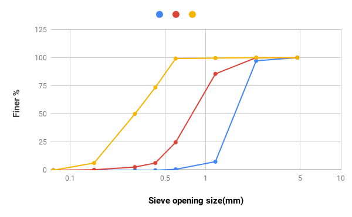

Liquid Limit Test
Result
Plot the relationship between percent finer (on y-axis) and particle diameter (on x-axis) on semi-log graph.
the graph which we will get looks like

Now we calculate the Cc (coefficient of curvature) and Cu(coefficient of uniformity) from above graph.
Sample 1(blue)
D10 = 1.212, D30 = 1.475, D60 = 1.87
Cu = D60/D10 = 1.543
Cc = (D30)^2/D60*D10 = 0.96
Sample 2(red)
D10 = 0.459, D30 = 0.650, D60 = 0.936
Cu = D60/D10 = 2.04
Cc = (D30)^2/D60*D10 = 0.983
Sample 3(yellow)
D10 = 0.162, D30 = 0.231, D60 = 0.353
Cu = D60/D10 = 2.18
Cc = (D30)^2/D60*D10 = 0.933